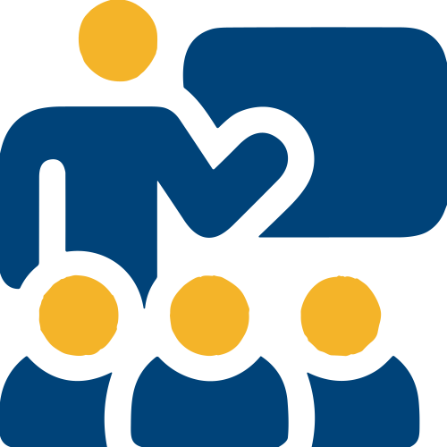

La Universidad Politécnica de Madrid es conocida por su
investigación pionera en análisis de datos, estudios y métodos técnicos y científicos. La
asociación de Innova-tsn con la Universidad proporciona acceso a los últimos avances
en estas áreas, garantizando que las dos partes se mantengan a la vanguardia de la
innovación tecnológica y consoliden resultados relevantes para la sociedad.
Fomento del talento
La Cátedra fomenta un entorno de aprendizaje dinámico en el
que los estudiantes de la Universidad Politécnica de Madrid pueden interactuar
directamente con proyectos reales y profesionales del sector de Innova-tsn. Esta
exposición complementa su aprendizaje académico y les dota de habilidades técnicas
y prácticas que les permiten estar a la vanguardia del mercado laboral.
Impacto en la comunidad
Esta asociación refuerza el papel de la Universidad como
nexo para la difusión del conocimiento, canalización de iniciativas científicas y deinvestigación, y el compromiso de la comunidad. Los proyectos de estudio, talleres y
seminarios conjuntos ayudarán a resolver problemas del mundo real y a avanzar en el
campo más amplio de análisis sobre datos e ingeniería, todo ello bajo el lema "Donde
los datos construyen la historia".

Mentoring
Componente fundamental de la asociación entre Innova-tsn y la UPM.
Profesionales experimentados actuarán como mentores, guiando a los estudiantes
para hacer puente entre el mundo académico y la industria. A través de escenarios
de formación y proyectos de colaboración, los estudiantes adquirirán herramientas
que les permitirán aplicar sus conocimientos académicos en contextos reales. Esta
Cátedra busca nutrir a la sociedad de nuevas generaciones de profesionales capaces
de abordar cualquier reto tecnológico.
Aplicación en el mundo real
La experiencia de Innova-tsn en la aplicación práctica de
datos y tecnología complementa a la perfección el enfoque académico de la
Universidad Politécnica de Madrid. Esta asociación permite la transferencia de los
resultados de investigación en soluciones del mundo real que benefician a la industria,
la academia y a la sociedad en general.
Equipo
Equipo Cátedra INNOVA-tsn UPM
Personas del Equipo de la Cátedra
Javier Sánchez Tirados
Alumno de la Universidad Politécnica de Madrid y becario de la Cátedra INNOVA-tsn UPM.
Eventos
2023
Octubre
Noviembre
3 NOV
10:00-14:00 Madrid
Redefining the Electricity Market Agent's Experience through Digitalization and AI.
Estudiantes del máster MUID-HCID. Session 1.
24 NOV
10:00-14:00 Madrid
Redefining the Electricity Market Agent's Experience through Digitalization and AI.
Estudiantes del máster MUID-HCID. Session 2.